ROG CITADEL XV: Chapter II (2022)
- extended FPS campaign with new mechanics and content -
Overview
ROG CITADEL XV: Chapter II serves as a major narrative and gameplay expansion to the original ROG Citadel experience. It transitions from a passive showroom into a more active FPS campaign, introducing deeper storytelling, aggressive AI, and expanded environmental interaction.
My Role
In my role as Game Director and Art Director, I was responsible for evolving the visual and mechanical language of the series. I defined the new combat scenarios, directed the cinematics, and ensured the expanded environments maintained the high-fidelity sci-fi aesthetic established in Chapter I while introducing new visual themes.
Highlights
- Developed an extended FPS campaign with complex AI behavior and weapon mechanics.
- Designed massive, high-detail sci-fi environments with dynamic lighting.
- Standardize art assets creation through the use of trimsheet, textures and master materials.
- Managed the cross-disciplinary team to integrate new gameplay systems into the existing framework.
Art & Process

For Chapter II, we set out to dramatically expand the scale of the experience. The environments evolved from intimate showroom spaces into sprawling, complex industrial zones rich with sci-fi detail. To achieve the level of fidelity needed to complement high-end ROG hardware, we utilized advanced Unity shaders and PBR workflows, pushing the visual quality far beyond the previous chapter.
The project scope grew significantly in every aspect. Level design expanded into a vast maze filled with encounters and AI enemies, requiring robust navigation systems and pathfinding. Boss mechanics were introduced, each supported by dedicated behavior trees. Animation complexity increased, and the chapter featured two pre-rendered cinematics to elevate storytelling. Overall, Chapter II was a far more ambitious undertaking, demanding expertise across all disciplines to bring the vision to life.
In order for our art team to be able to craft this amount of art assets, I've standardized a work flow that involves of using the same 'trimsheet' and materials that's applied to all the levels and robot characters that could speed up the process much faster and more efficient. It was a techniques that's widely used in the game industry so enforcing all of our design by following the trimsheet was a right decision which not only saves the time but also saves hardware memory issues as it potentially saves hundreds of 2k textures.
Here are all the levels that I supervised, concepted and finalized with our modeling team.
Communal Hall: Modeling/Texture by Bao, Concept: Kuan-Ju
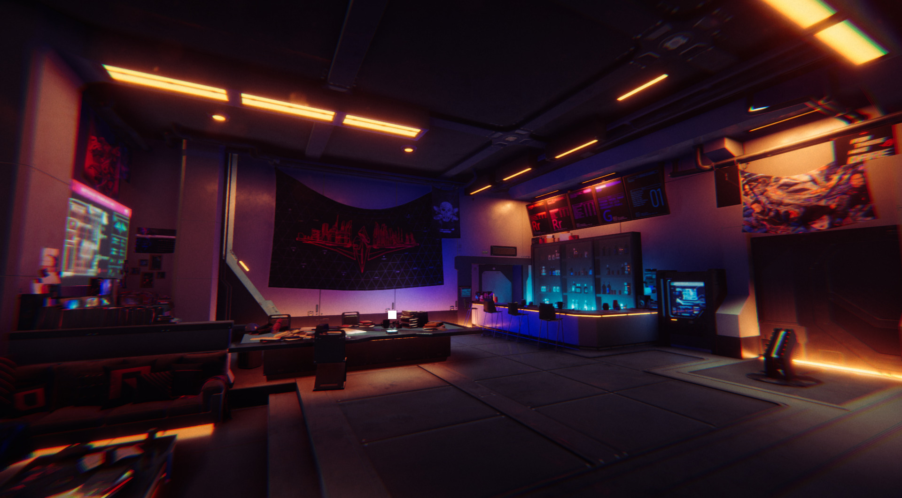
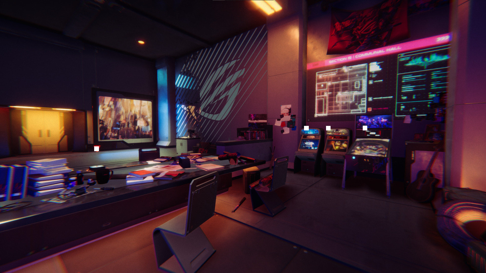
Elevator: Modeling/Texture by Tomo, Concept: Kuan-Ju
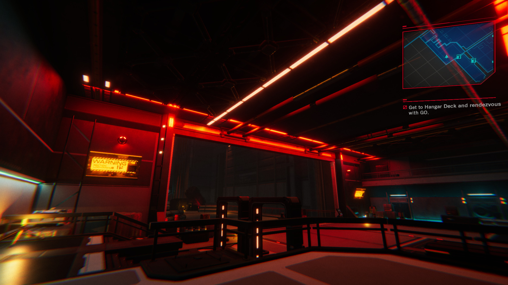
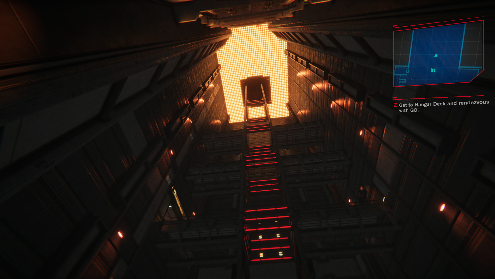
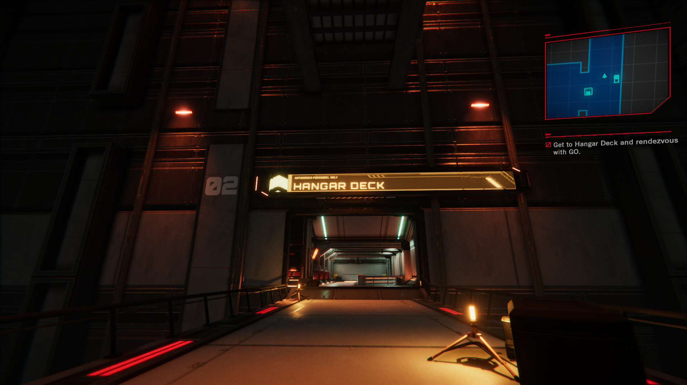
Corridors: Modeling/Texture by Bao, Concept: Kuan-Ju
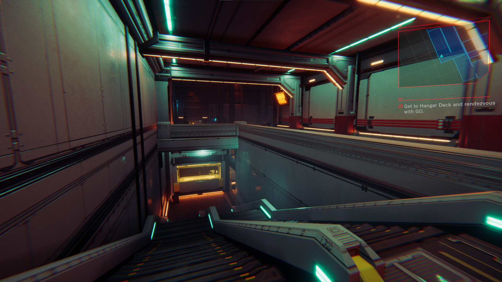
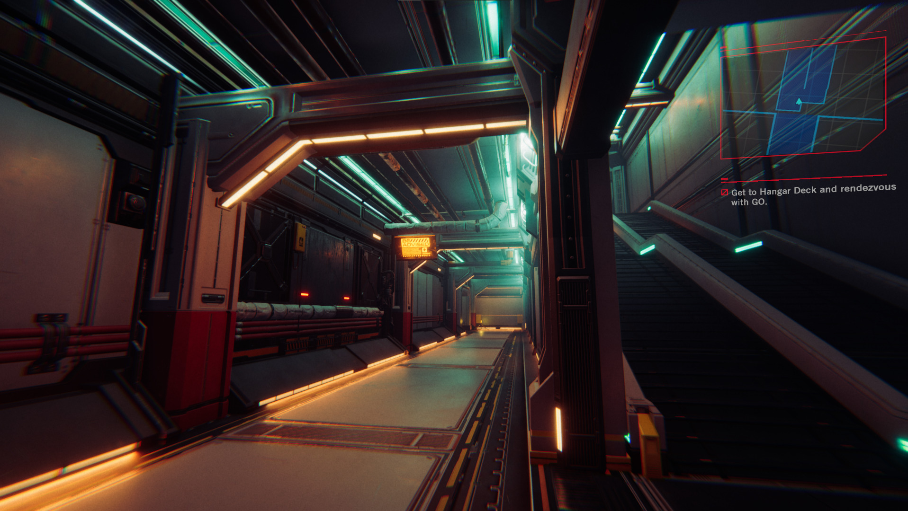
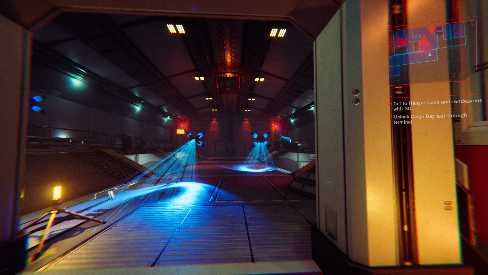
Warehouse: Modeling/Texture by Tomo, Concept: Kuan-Ju
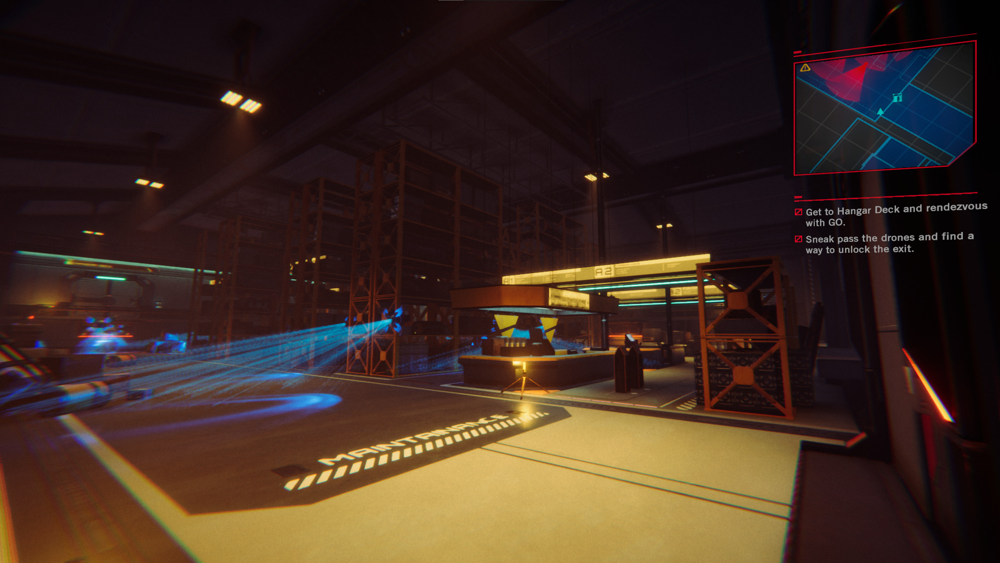
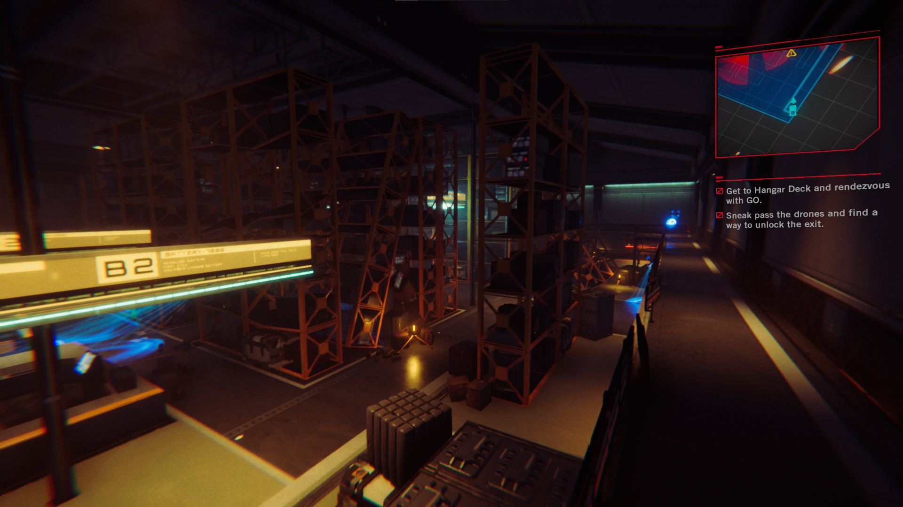
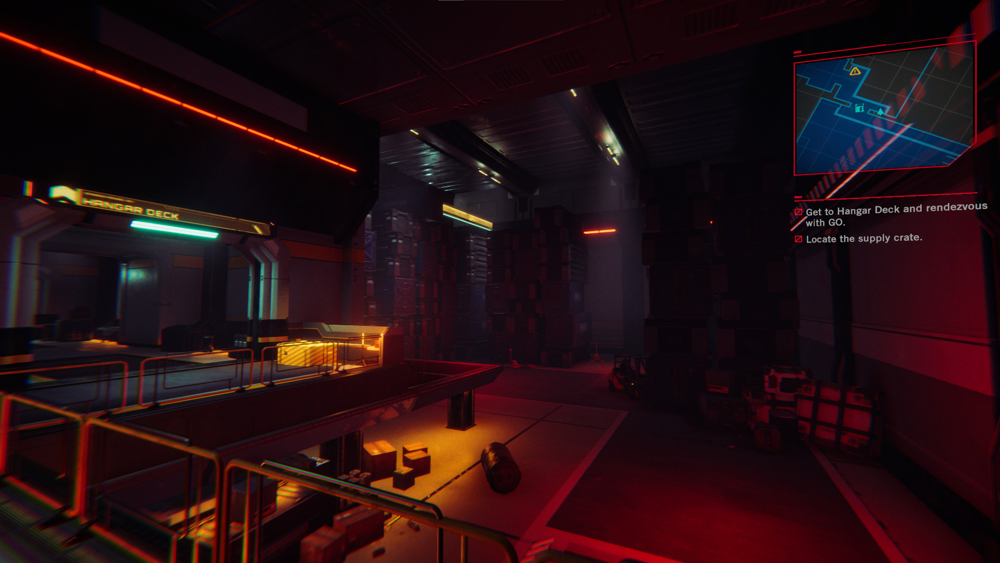
Hangar: Modeling/Texture by Tomo
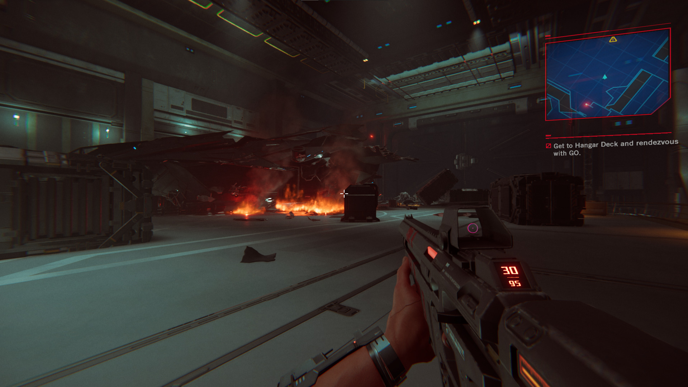
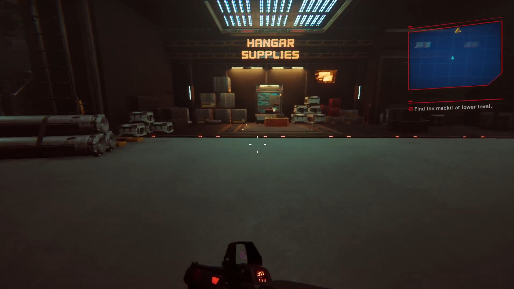
VFX: Mina
There are awesome VFX done by our VFX guru Mina that uses complex Houdini point cloud nodes and Unity's Visual Effect graph for particle simulations.
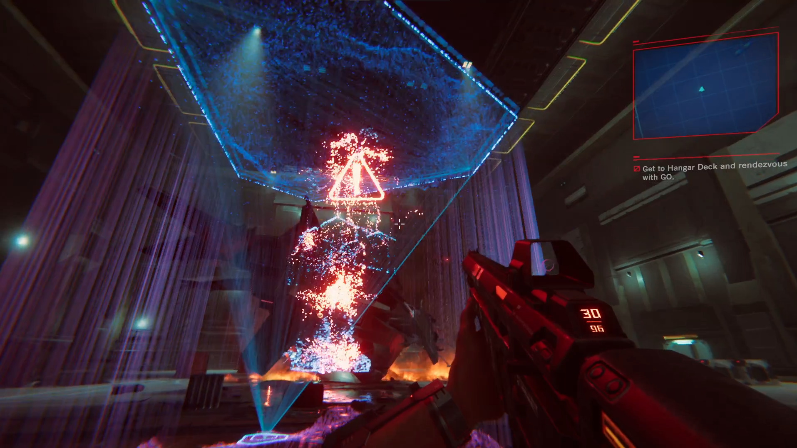
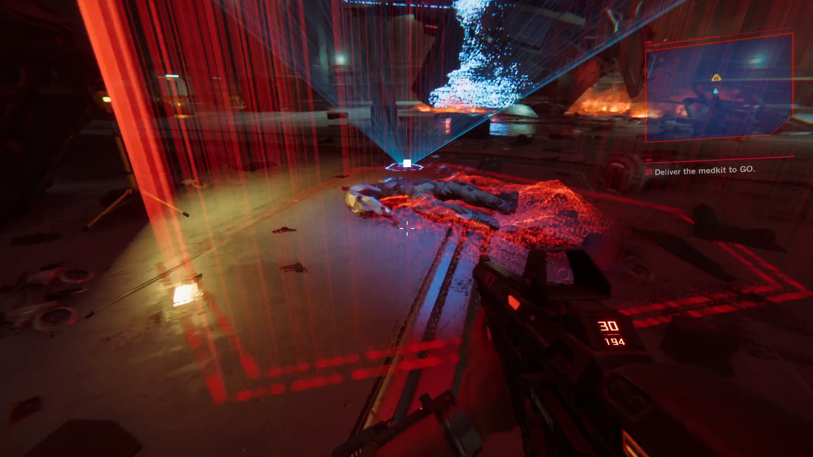
On Screen HUD: Joe
Some of the screen HUD animation was done by our in-house motion graphic artist Joe. Created with Cinema4D and After Effect.
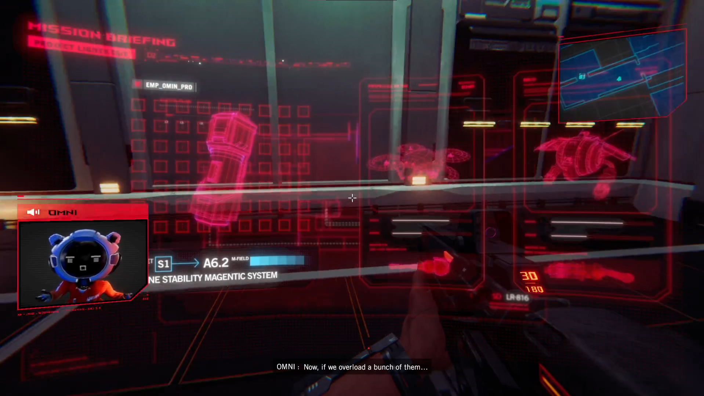

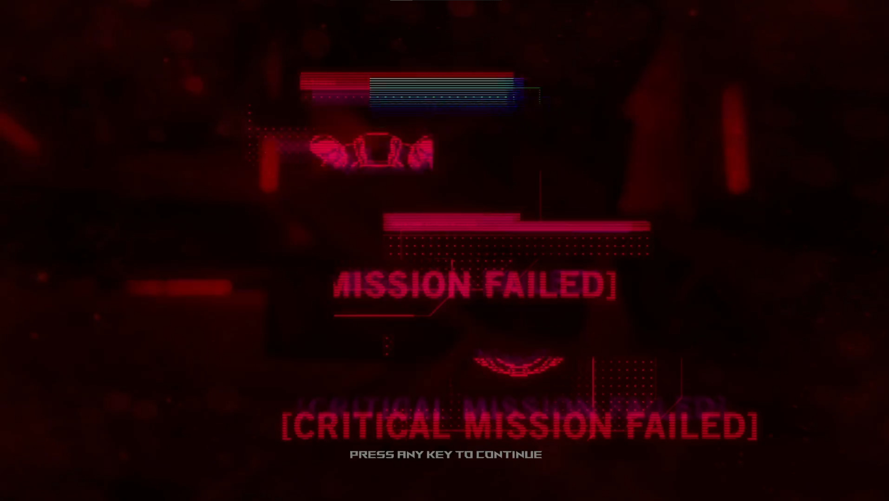
Filler Art
A lot of the filler arts are designed to enhance the Sci-Fi setting.
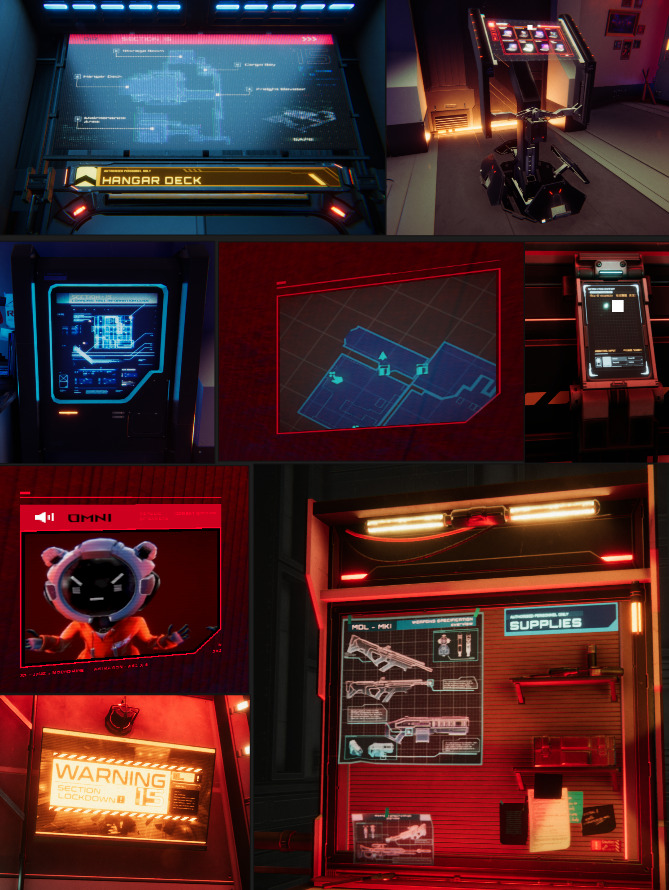
Animation: Stone / VFX: Mina
Amazing animation done by Stone and effects by Mina with this Boss entrance sequence. The team went through multiple iteration of the entrance and improve it a lot to create the impact of suprise. The victory animation sequence was also smooth and amazing with the smooth and fluid camera work done by our animator lead Stone.
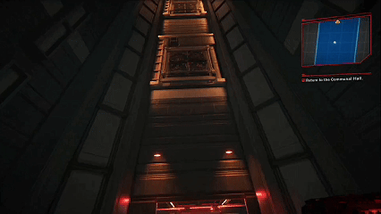

AI behaviour: Lu Yi
Great job to our programmer Lu Yi that handled AI behaviours and created simple yet challenging encounters for our players. I really love the death ray effect from the 'Beholder'.

Closing
This project was the most fun to work on as it challenges me on every aspect during the production stages. I had to manage all art production timeline and reviews large amount of assets while creating and working in the scene myself (mostly on lighting, detailing, props creation and in engine tuning, after I've done all the blocking and concepting). I also had to have regular meetings and weekly milestones deadline to meet with the clients on a weekly basis in order to keep the team on schedule (this is really important as we discuss on certain wishlists that were not possible with our resources and provide different alternatives for our clients). On top of this I also have to coordinate between programmers to discuss new features or pipelines on how we could implement a certain features related to art (etc animation transition from realtime animation sequence back and forth to gameplay). So I was wearing multiple hats during production, even though it was not the first time for me but it is still a new experience on creating the work on such scale in the production environment.
Gallery
Project Details
Role: Game Director, Art Director
Type: Game / FPS Campaign
Year: 2022
Client: ASUS ROG
Tools & Tech: Unity Engine, Adobe Creative Suite, Autodesk Maya, Substance Painter